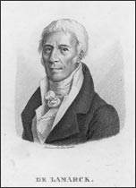

Jean Baptiste Lamarck
1744–1829
Although Lamarck's theories of evolution have been discarded due to the current knowledge of genetics, the theories of this gifted zoologist did set the stage for Charles Darwin's theory of natural selection.
The youngest of eleven children, Lamarck briefly pursued careers in the church, the army, banking, and medicine before finally discovering that research science was his true calling. He studied botany for ten years and published work on the plants of France, gaining the respect of his peers in the scientific community. Soon he was receiving a modest salary as a botanist and teacher.
As a result of his work, Lamarck was asked to categorize the insect and worm collections in the National Museum of Natural History in Paris. At the outset he knew little about these small animals, but he learned everything he could about their characteristics and even coined the term invertebrates, animals without a spine. By comparing current species to fossil forms in the museum, Lamarck noticed that fossils gradually changed over time to appear more and more like current species. Like a handful of other forward-thinking scientists of his day, Lamarck realized that species must change over time, adapting to environmental changes.
According to Lamarck's theory, animals altered their behavior in responses to changes in their environment. These behavioral changes would lead to the animal relying more on certain anatomical parts and relying less on other parts. Over time the parts that were used more often would grow larger or stronger, while the parts used less often would shrink or even disappear. Larmarck proposed that organisms passed on these new characteristics to their offspring.
Of course, today we know that only traits that are encoded in an organism's genetic material can be inherited by the next generation. There is no evidence that new characteristics acquired during an organism's lifetime can modify the organism's DNA. Nonetheless, by suggesting that species could evolve over time, Lamarck endorsed an important idea that laid the groundwork for Darwin.